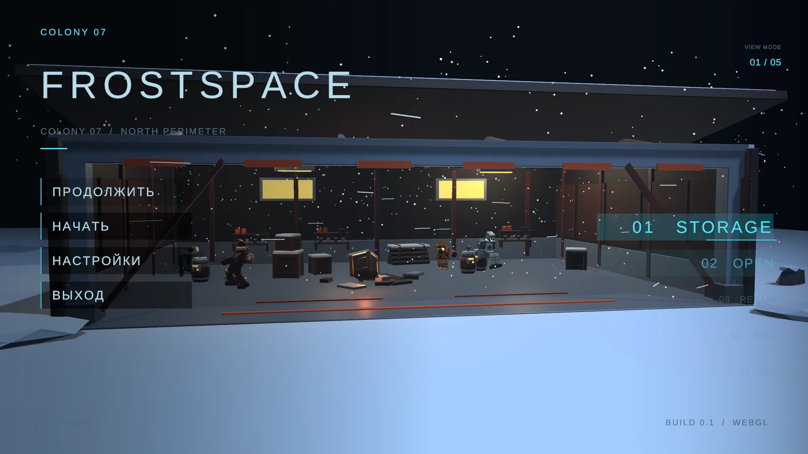
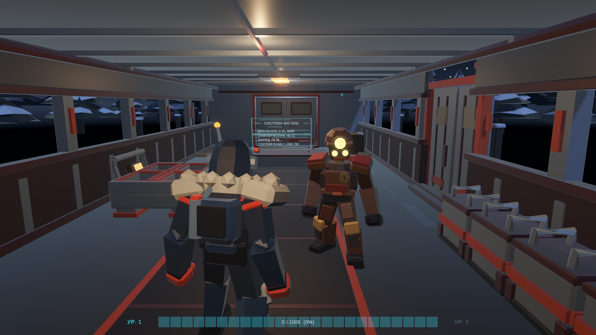
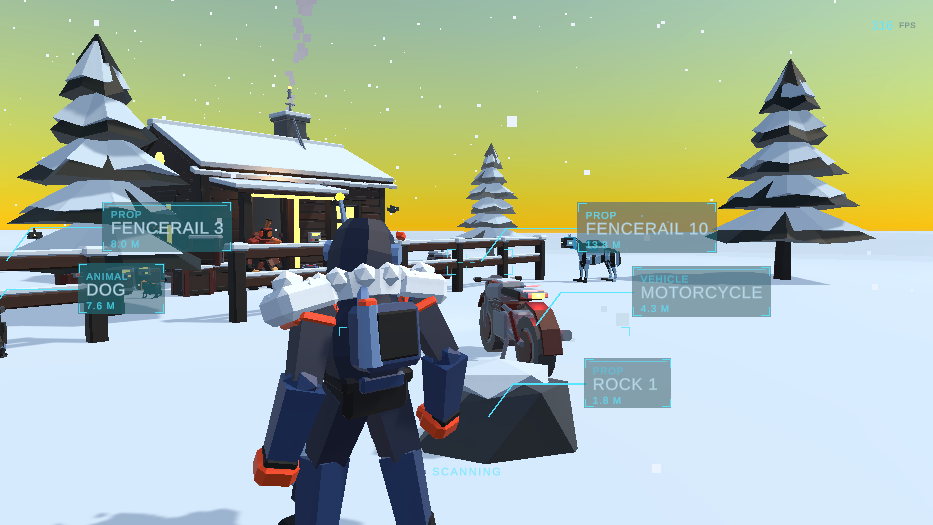
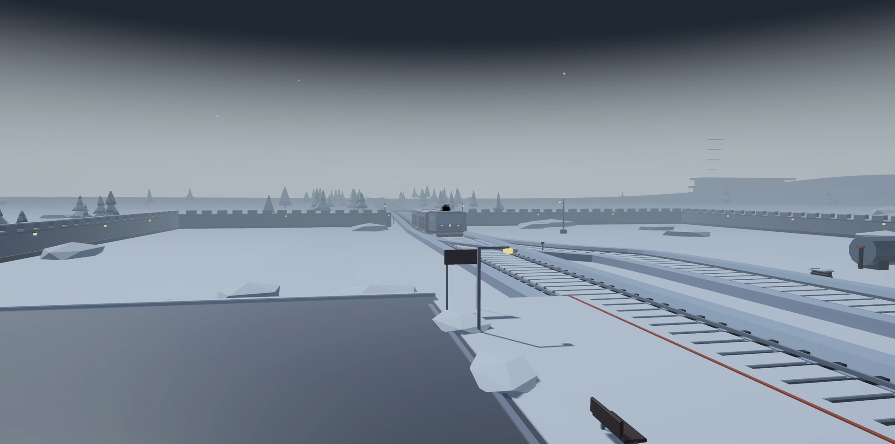
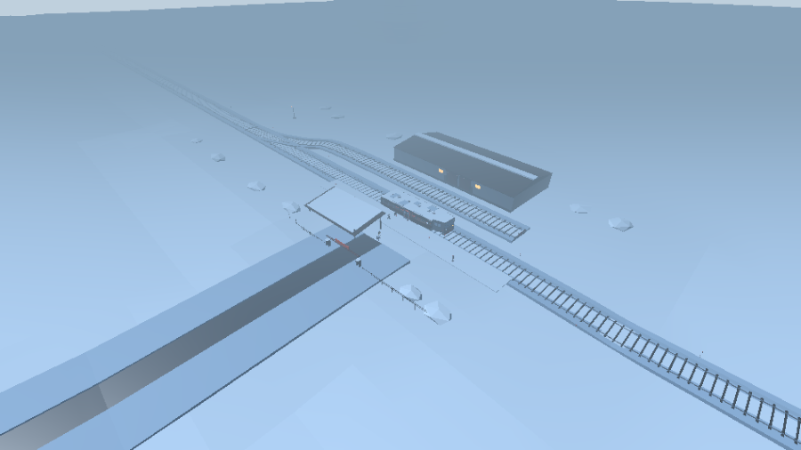
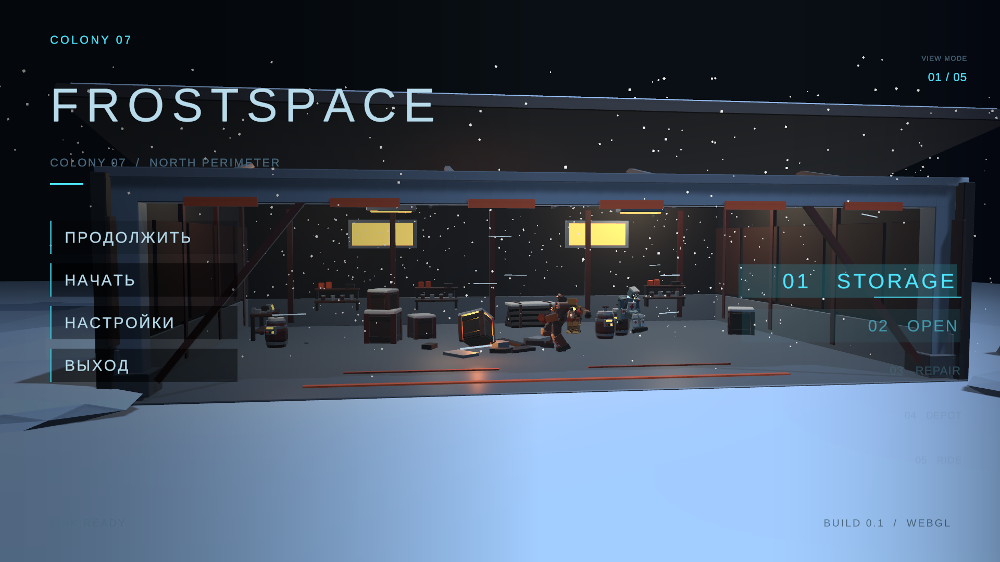
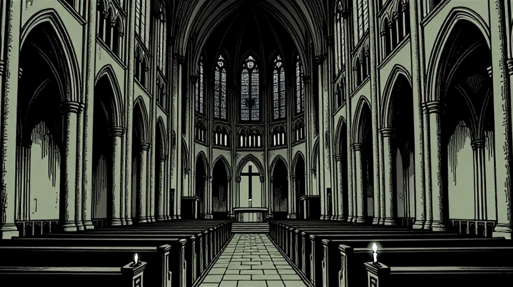
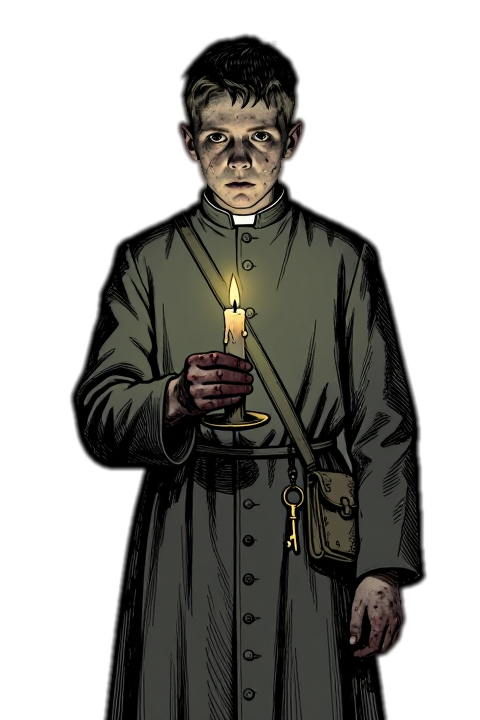
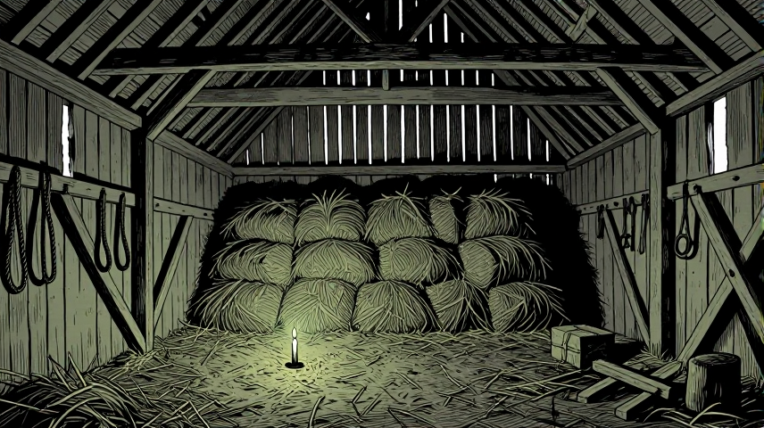

Колония 07
Склады, депо, мастерские и станции связи. Энергия — аккумуляторы, которые возят между узлами. Связь редкая, дороги заносит.

Робот-курьер, мёртвая зима и последний узел связи. Донести груз. Не замолчать. Не забыть, зачем ехал.
Снежная промышленная окраина. Людей больше нет — остались роботы и искусственная жизнь. По миру идёт Тишина: вирус, который гасит «я» в машинах.
Мир не ждёт спасения, и герой не ждёт. Он делает смену, пока она делается.
Вы — робот-курьер аккумуляторов. Память недавно перезагрузили: вы не помните прошлых рейсов и не знаете напарника. Это объясняет и обучение, и вопросы вслух, и то, почему вам объясняют очевидные вещи.

Склады, депо, мастерские и станции связи. Энергия — аккумуляторы, которые возят между узлами. Связь редкая, дороги заносит.
Не монстр и не туман. Вирус, который гасит «я» в машинах. Мир доживает, и никто не ждёт, что его спасут.
Три корпуса: универсал, лёгкий курьер, тяжёлый ремонтник. Разная скорость, переноска и прыжок — разный характер движения.
Пять шагов одного рейса. Дальше — свободное исследование и открытый финал, из которого вырастает станция-хаб.
R13 объясняет рейс: новый курьер, память стёрта, груз — четыре аккумулятора.
Каждый аккумулятор берётся руками. В руках — медленнее, без спринта и прыжка.
Грави-тележка на четыре слота. Счётчик растёт, трекер квеста закрывается.
Тормоза не держат: свет, дым, удар и титульный экран. Управление отключено.
Заставка прибытия, охрана, диспетчер R7, карта и сканер. Дальше — мир.
25–30 минут сюжетного среза плюс свободное исследование депо, посёлка и станции. Без установки и регистрации.
Совет: после аварии не пропускайте заставку прибытия — это лучший кадр игры. В депо поговорите с R7: он выдаёт карту и сканер, после этого работает Q.
СОХРАНЕНИЕ: ПРОГРЕСС ПИШЕТСЯ В БРАУЗЕР. «ПРОДОЛЖИТЬ» В МЕНЮ ВЕРНЁТ НА ТО ЖЕ МЕСТО.
Не «ещё одна ходьба»: рукописный мир, который читается как место работы, и инструменты, которые меняют взгляд на него.

Волна находит цели, подписывает ближайший объект и то, что в прицеле. Это не карта и не радар — это способ смотреть на мир.
20 роботов, 13 животных, поезд и 121 клетка по 400 м. Всё собрано скриптами в Blender через MCP — от геометрии до превью.
Три машины с разной камерой и весом. В полной версии — дорога до станции и перевозка тележки на прицепе.
Кадры из играбельной сборки. Нажмите, чтобы открыть.



Трейлер — 42 секунды: смена, авария, депо. Полное прохождение главами — следом.
Один контракт работы, 34 скилла, живой редактор и Blender под управлением агентов. Решения о мире и тоне — мои.
Премиум-игра на Steam, ранний доступ в конце шестого месяца. Команда собирается вокруг автора, AI снимает рутину.
Полировка, геймпад, RU/EN, страница Steam, два плейтеста.
Посёлок, станция, склад. Шесть квестов, журнал, save/load.
Гравицикл, шагоход, холод, карта мира, два узла.
Кооп на NGO, две активности, косметика. Главный риск плана.
Контент-лок, баланс, доступность, демо к Next Fest.
Релиз, сезон 1, live-ops. Цель — 5 000 копий за месяц.
ПОДРОБНО: этапы, команда, KPI И РИСКИ — В РАЗДЕЛЕ ПРОИЗВОДСТВА. ИСТОЧНИК — docs/PRODUCTION-PLAN.MD.
Сюжетная игра заканчивается, сервис — начинается. Станция «Север-7» становится общим хабом.
Поезд, авария, депо. 30 минут, которые показывают тон, цикл и качество мира.
4–6 часов: три узла, дорога, холод, транспорт, финал истории курьера.
Игроки в одном хабе, совместные рейсы и ремонт узлов, сезоны и косметика без pay-to-win.
Разные жанры и разные сильные стороны: инженерия сети и производство арта.
2–5 игроков, три линии, приказы только базе: армии выходят и идут сами. Каждые 900 секунд матч замирает на арену и дуэли 1×1 по золоту.
166 000 строк, свой netcode на NGO с миграцией хоста и реконнектом, 1332 теста, 124 релиза.
WEBGL-СБОРКА СОБРАНА ЛОКАЛЬНО (102 МБ) И ПРЕВЫШАЕТ ЛИМИТ GITHUB PAGES НА ФАЙЛ. В БРАУЗЕР ВЫЛОЖУ ПОСЛЕ СЖАТИЯ ТЕКСТУР. В ДЕМО НЕТ БОТА: ВТОРОЙ СЛОТ ЗАНИМАЕТ ЛОКАЛЬНАЯ «СТАТУЯ», ВОЛНЫ ВЫХОДЯТ И ИДУТ ПО ЛИНИЯМ. МОДЕЛИ — ВРЕМЕННЫЕ АССЕТЫ, ПРАВА ПРИНАДЛЕЖАТ ПРАВООБЛАДАТЕЛЯМ.

Кооперативный хоррор-детектив 1–4 игрока: днём допросы и улики, ночью — выживание, в финале — обвинение и казнь. Ошибка стоит репутации, повторная — головы.
52 000 слов геймдизайна, 11 ADR, 8 спецификаций. 56 пулов персонажей, 118 ink-портретов, 32 фона, выбор по seed деревни без повторов лиц.


AI-продюсер и геймдизайнер. Собираю игры целиком: мир, механики, код, арт и производство.
За четыре недели собрал играбельный срез FrostSpace: 148 файлов кода, 413 мешей в Blender, 277 тестов и живую WebGL-сборку. До этого — три месяца BARAKI с собственным сетевым слоем и 1332 тестами, и Woodberry с 52 000 слов геймдизайна и производством арта через ComfyUI.
Сильная сторона — соединять дисциплины: продюсерский план, геймдизайн, техническая реализация и AI-пайплайн в одном человеке. Слабость, которую вижу честно: сетевой кооп в FrostSpace ещё не прототипирован — это первый риск плана и первая задача M4.
Готов обсуждать полную версию, сроки и формат работы.
АНКЕТА: docs/SUBMISSION.MD